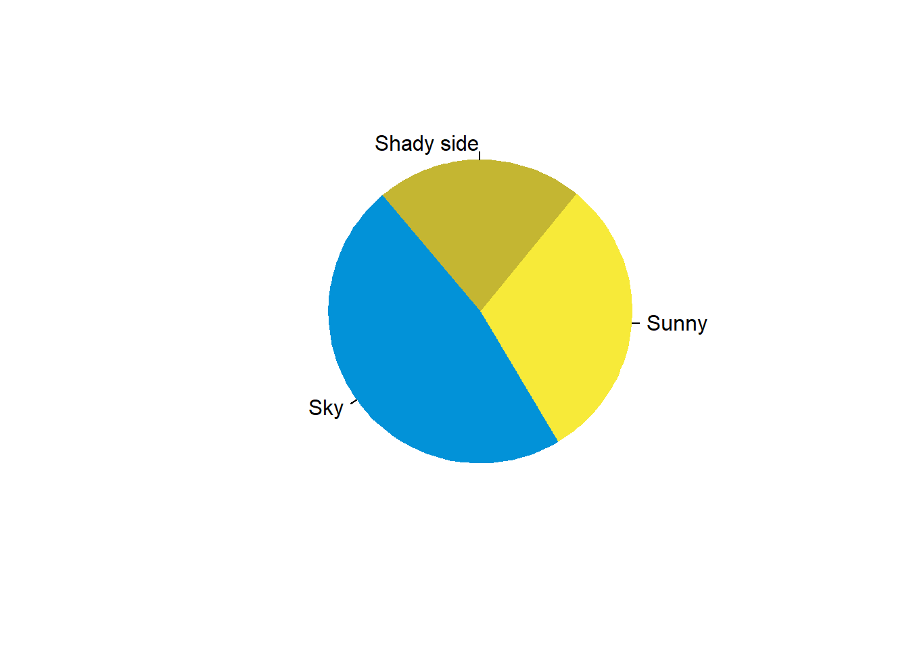

Chapter 3 Data Analysis: Base R
3.1 Session 01: Visualization
3.1.1 Correlation Plot
3.1.2 Pie Chart
pie(
c(280, 180, 130),
c('Sky', 'Sunny', 'Shady side'),
col = c('#0292D8', '#F7EA39', '#C4B632'),
init.angle = 130, border = NA )
3.1.3 Bar Chart
3.1.4 Chart Characteristics (color, title, axes etc.)
3.1.5 How to Use Proper Legends?
Histogram; Ogive (and how to interpret it); Boxplot; Time Series Plots/Line Chart; Scatter Plot; Equation and Curves; Love Equation and Curve; Different Ways of Coloring Plots, including RColorBrewer; Wordcloud; Comparison of Suitability of Plots.
3.2 Session 02: Analysis
Measures of Central Tendency and Dispersion (Averages, Quartiles, Variance, etc.); Correlation;